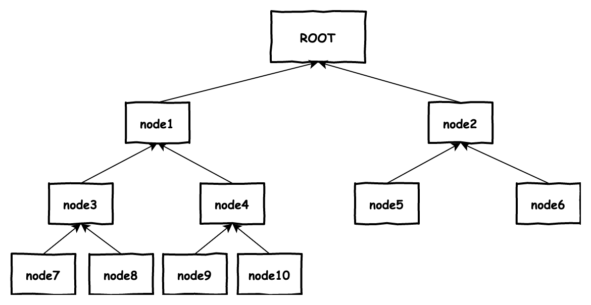

非事务场景跨链使用文档¶
跨链的背景知识可以参考 XuperChain 的设计文档 ` XuperChain 跨链技术 <../design_documents/cross_chain.html>`_ ，这里介绍一下 XuperChain 自带的跨链工具的使用方式。
中继同步合约¶
合约的代码在 xuperchain/core/contractsdk/cpp/example/xuper_relayer.cc 中，主要功能是存储其他链上的有前后关系的区块在合约中，并可以查询指定交易在所存区块中是否存在、是否合法。
initAnchorBlockHeader：此方法用于存储第一个区块，每个合约只能调用一次，存储时不需要检查区块的合法性
putBlockHeader：此方法用于存储后继的区块，调用次数无限制，但存储的区块需是某个已存区块的后继块
verifyTx：此方法用于校验指定的交易是否存在且合法，需要提供交易所在区块和梅克尔路径信息
printBlockHeader：调用此方法可使用区块id获取存储块的内容
合约使用方法¶
合约部署调用在 创建合约 中有提到，中继同步合约在部署上和其他合约无异，但调用过程中可能有些不同的地方。
中继同步合约在调用过程中往往需要传入区块内容的参数，这个参数以字符串形式传入，解析时则以序列化Protobuf来处理
1std::unique_ptr<relayer::InternalBlock> anchorBlockHeader(
2 new relayer::InternalBlock);
3std::string anchorBlockHeaderStr = ctx->arg("blockHeader");
4bool succ = anchorBlockHeader->ParseFromString(anchorBlockHeaderStr);
这里如果在命令行中操作就会遇到一些麻烦，在命令行中调用，blockHeader字段需要使用base64编码放在json中；更多的是序列化的InternalBlock数据从哪里来。
proto文件位于 xuperchain/core/contractsdk/cpp/example/xuper_relayer/src/relayer.proto，其中的InternalBlock和 xuperchain/core/pb/xchain.proto XuperChain 的InternalBlock定义是一致的，我们可以使用 XuperChain 提供的RPC接口
1rpc GetBlock(BlockID) returns (Block);
2message BlockID {
3 Header header = 4;
4 string bcname = 1;
5 bytes blockid = 2;
6 // if need content
7 bool need_content = 3; //是否需要内容
8}
9message Block {
10 Header header = 1;
11 string bcname = 2;
12 bytes blockid = 3;
13 enum EBlockStatus {
14 ERROR = 0;
15 TRUNK = 1;
16 BRANCH = 2;
17 NOEXIST = 3;
18 }
19 EBlockStatus status = 4;
20 InternalBlock block = 5;
21}
来获取InternalBlock内容，注意输入中的 need_content 需要置为true。
对于查询交易的方法，除了所在区块id外，还需要传入一个“梅克尔路径”。对于梅克尔树的定义，这里不再赘述，可参考 Merkle_tree ，在梅克尔树中，待验证交易的txid是存在于某个叶子结点中的，我们需要给出此叶子结点合并计算hash至根节点的路径，以下图为例
{kind=link}
假如我们需要验证node8的合法性，我们需要给出从node8计算出root的所有节点，即node7、node8与node4，他们的相对顺序需要按照二叉树的中序遍历位置给出，即我们需要如下构造输入参数
1{
2 "proofPath": "[node7 hash],[node8 hash],[node4 hash]",
3 "txIndex": 1
4}
其中的hash字段使用逗号分隔，待验证的id在其中的位置需要给出。
中继同步进程¶
中继同步进程的代码位于 xuperchain/core/cmd/relayer 中，是“自动”调用中继同步合约的一个工具，运行配置文件如下：此方法用于
1anchorBlockHeight: 20
2chains:
3srcChain:
4 rpcAddr: "remotehost:37101"
5 bcname: "xuper"
6dstChain:
7 rpcAddr: "localhost:37101"
8 bcname: "xuper"
9 keys: "./data/keys"
10 contractConfig:
11 moduleName: "wasm"
12 contractName: "relayer"
13 updateMethod: "putBlockHeader"
14 anchorMethod: "initAnchorBlockHeader"
其中的srcChain是需要存储的区块信息的来源链，dstChain是部署中继合约的目标链，使用中继同步进程需要事先部署完成中继合约，并将合约的名称填入contractName字段。anchorBlockHeight表示是从来源链中的高度20的区块开始同步，需要视具体情况修改。
运行除了配置文件不需要额外参数，不过需要注意的是，同步区块的过程是自动的，如果您试图从较小的高度同步一个已经很高的链，请做好接收大量数据的准备。